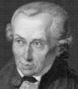
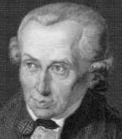
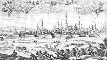

Philosophy Pages
| Dictionary | Study Guide | Logic | F A Q s | ||
|---|---|---|---|---|---|---|
| History | Timeline | Philosophers | Locke | |||
| Philosophy Pages
| Dictionary | Study Guide | Logic | F A Q s | ||
|---|---|---|---|---|---|---|
| History | Timeline | Philosophers | Locke | |||

Immanuel Kant was born in the East Prussian city of Königsberg, studied at its university, and worked there as a tutor and professor for more than forty years, never travelling more than fifty miles from home. Although his outward life was one of legendary calm and regularity, Kant's intellectual work easily justified his own claim to have effected a Copernican revolution in philosophy. Beginning with his Inaugural Dissertation (1770) on the difference between right- and left-handed spatial orientations, Kant patiently worked out the most comprehensive and influential philosophical programme of the modern era. His central thesis—that the possibility of human knowledge presupposes the active participation of the human mind—is deceptively simple, but the details of its application are notoriously complex.
The monumental Kritik der reinen Vernunft
(Critique of Pure Reason) (1781, 1787)
 fully spells out the conditions for mathematical, scientific, and metaphysical knowledge in its "Transcendental Aesthetic," "Transcendental Analytic," and "Transcendental Dialectic,"
but Kant found it helpful to offer a less technical exposition of the same themes in the
Prolegomena zu einer jeden künftigen Metaphysik die als Wissenschaft wird auftreten können
(Prolegomena to any Future Metaphysic) (1783).
Carefully distinguishing judgments as
analytic or synthetic and as
a priori or a posteriori, Kant held that the most interesting and useful varieties of human knowledge rely upon
synthetic a priori judgments, which are, in turn, possible only when the mind determines the conditions of its own experience.
Thus, it is we who impose the
forms of space and time upon all possible
sensation in mathematics, and it is we who render all experience coherent as
scientific knowledge governed by traditional notions of
substance and causality by applying the
pure concepts of the understanding to all possible experience.

But regulative principles of this sort hold only for
the world as we know it, and since
metaphysical propositions seek a truth
beyond all experience, they
cannot be established within the bounds of reason.
fully spells out the conditions for mathematical, scientific, and metaphysical knowledge in its "Transcendental Aesthetic," "Transcendental Analytic," and "Transcendental Dialectic,"
but Kant found it helpful to offer a less technical exposition of the same themes in the
Prolegomena zu einer jeden künftigen Metaphysik die als Wissenschaft wird auftreten können
(Prolegomena to any Future Metaphysic) (1783).
Carefully distinguishing judgments as
analytic or synthetic and as
a priori or a posteriori, Kant held that the most interesting and useful varieties of human knowledge rely upon
synthetic a priori judgments, which are, in turn, possible only when the mind determines the conditions of its own experience.
Thus, it is we who impose the
forms of space and time upon all possible
sensation in mathematics, and it is we who render all experience coherent as
scientific knowledge governed by traditional notions of
substance and causality by applying the
pure concepts of the understanding to all possible experience.

But regulative principles of this sort hold only for
the world as we know it, and since
metaphysical propositions seek a truth
beyond all experience, they
cannot be established within the bounds of reason.
Significant applications of these principles are expressed in Metaphysische Anfangsgründe der Naturwissenschaft (Metaphysical Foundations of the Science of Nature) (1786) and Beantwortung der Frage: Ist es eine Erfahrung, daß wir denken? (On Comprehension and Transcendental Consciousness) (1788-1791).
Kant's moral philosophy is developed in the Grundlegung zur Metaphysik der Sitten
(Grounding for the Metaphysics of Morals) (1785).
 From his analysis of the
operation of the human will, Kant derived the necessity of a
perfectly universalizable moral law, expressed in a
categorical imperative that must be regarded as binding upon every agent.
In the Third Section of the Grounding and in the
Kritik der practischen Vernunft
(Critique of Practical Reason) (1788), Kant grounded this conception of moral
autonomy upon our postulation of
god, freedom, and immortality.
From his analysis of the
operation of the human will, Kant derived the necessity of a
perfectly universalizable moral law, expressed in a
categorical imperative that must be regarded as binding upon every agent.
In the Third Section of the Grounding and in the
Kritik der practischen Vernunft
(Critique of Practical Reason) (1788), Kant grounded this conception of moral
autonomy upon our postulation of
god, freedom, and immortality.
In later life, Kant drew art and science together under the concept of purpose in the Kritik der Urteilskraft (Critique of Judgment) (1790),  considered the consequences of transcendental criticism for theology in Die Religion innerhalb die Grenzen der blossen Vernunft (Religion within the Limits of Reason Alone) (1793), stated the fundamental principles for civil discourse in Beantwortung der Frage: Was ist Aufklärung? ("What is Enlightenment?" (1784), and made an eloquent plea for international cooperation in Zum ewigen Frieden (Perpetual Peace) (1795).
|
Recommended Reading:
Primary sources:
Secondary sources:
Additional on-line information about Kant includes:
|